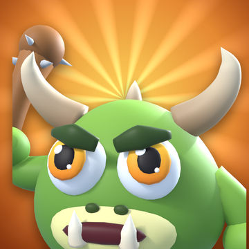

La Horde
Lâche ta horde et rase les camps ennemis !
Unleash your horde and raze the enemy camps!
Assistance
Une question, un souci, une idée ? Écris-nous, on répond en français ou en anglais.
thomasmuller2@gmail.comQuestions fréquentes
Où est enregistrée ma progression ?
Sur ton iPhone, et dans ses sauvegardes iCloud ou ordinateur si tu les as activées. Le jeu n'a pas de compte en ligne : si tu supprimes l'app, ta progression est effacée.
J'ai acheté des gemmes mais je ne les ai pas reçues.
Ferme complètement le jeu, puis relance-le : un achat interrompu est livré au lancement suivant. Si le problème continue, écris-nous en indiquant la date de l'achat.
Comment demander un remboursement ?
Les paiements sont gérés par Apple. Tu peux demander un remboursement sur reportaproblem.apple.com.
Faut-il une connexion Internet ?
Non, La Horde se joue hors ligne. Une connexion n'est nécessaire que pour acheter des gemmes.
Comment changer la langue, le son ou les vibrations ?
Sur la carte, touche la roue dentée en haut à droite : tu y trouveras la musique, les sons, les vibrations et la langue.
Support
A question, a problem, an idea? Write to us, we answer in English or French.
thomasmuller2@gmail.comFAQ
Where is my progress saved?
On your iPhone, and in its iCloud or computer backups if you use them. The game has no online account: deleting the app erases your progress.
I bought gems but didn't receive them.
Close the game completely, then open it again: an interrupted purchase is delivered at the next launch. If it still doesn't work, write to us with the date of the purchase.
How do I ask for a refund?
Payments are handled by Apple. You can request a refund at reportaproblem.apple.com.
Do I need an Internet connection?
No, La Horde plays offline. You only need a connection to buy gems.
How do I change the language, sound or vibrations?
On the map, tap the gear at the top right: music, sounds, vibrations and language are there.